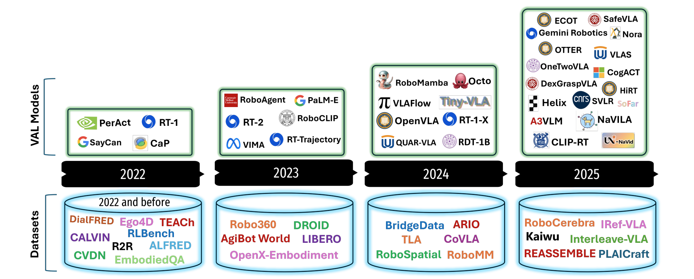

Multimodal Fusion with Vision-Language-Action Models for Robotic Manipulation: A Systematic Review
Muhayy Ud Dina, Waseem Akrama, Lyes Saad Saouda, Jan Rosellb, Irfan Hussain*a
aKhalifa University Center for Autonomous Robotic Systems (KUCARS), Khalifa University, United Arab Emirates
bInstitute of Industrial and Control Engineering (IOC), Universitat Politecnica de Catalunya, Spain
Accepted in Information Fusion Journal
A comprehensive resource page for Vision-Language-Action models, datasets, and evaluation tools in robotic manipulation research. This page accompanies the paper "Multimodal Fusion with Vision-Language-Action Models for Robotic Manipulation: A Systematic Review" published in Information Fusion Journal, and provides a living catalog of research resources. We aim to keep this collection up to date as new VLA models, datasets, and simulation tools emerge. Contributions and pull requests to our GitHub repository adding recently published work or tooling are most welcome!
Abstract
Vision Language Action (VLA) models represent a new frontier in robotics by unifying perception, reasoning, and control within a single multimodal learning framework. By jointly leveraging visual, linguistic, and motor modalities, they enable instruction-driven manipulation, cross-embodiment generalization, and scalable auton- omy. This systematic review synthesizes the state of the art in VLA research with an emphasis on architectures, algorithms, and applications relevant to robotic manipulation. We examine 102 models, 26 foundational datasets, and 12 simulation platforms, categorizing them according to their fusion strategies and integration mechanisms. Foundational datasets are evaluated using a novel criterion based on task complexity, modality richness, and dataset scale, allowing a comparative analysis of their suitability for generalist policy learning. We further introduce a structured taxonomy of fusion hierarchies and encoderdecoder families, together with a two-dimensional dataset characterization framework and a meta-analytic benchmarking protocol that quanti- tatively link design variables to empirical performance across benchmarks. Our analysis shows that hierarchical and late fusion architectures yield the highest manipulation success and generalization, confirming the benefit of multi-level cross-modal integration. Diffusion-based decoders demonstrate superior cross-domain transfer and robustness compared to autoregressive heads. Dataset analysis highlights a persistent lack of benchmarks that combine high-complexity, multimodal, and long-horizon tasks, while existing simulators offer limited multimodal synchronization and real-to-sim consistency. To address these gaps, we propose the VLA Fusion Evaluation Benchmark to quantify fusion efficiency and alignment. Drawing on both academic and industrial advances, the review outlines future research directions in adaptive and modular fusion architectures, compu- tational resource optimization, and the deployment of interpretable, resource-efficient robotic systems. This work provides both a conceptual foundation and a quantitative roadmap for advancing embodied intelligence through multimodal information fusion across robotic domains.
Citation
@article{din2025multimodal,
title={Multimodal Fusion with Vision-Language-Action Models for Robotic Manipulation: A Systematic Review},
author={Muhayy, Ud Din and Akram, Waseem and Saoud, Lyes Saad and Rosell, Jan and Hussain, Irfan},
journal={Information Fusion},
year={2025},
publisher={Elsevier}
}
Vision-Language-Action models have found diverse applications across robotics domains, from manipulation and navigation to human-robot interaction and autonomous systems. The following figure illustrates the broad spectrum of VLA applications in real-world scenarios:
Dataset Benchmarking Code
Benchmarking VLA Datasets by Task Complexity and Modality Richness. Each bubble represents a VLA dataset, positioned according to its normalized task-complexity score (x-axis) and its modality-richness score (y-axis). The bubble area is proportional to the dataset scale that is number of annotated episodes or interactions.

VLA Models Evaluation & Visualization
This repository includes a comprehensive analysis and visualization suite for evaluating Vision-Language-Action (VLA) models. The analysis covers multiple aspects of VLA model performance, architecture components, and theoretical foundations through detailed visualizations and statistical analysis.
Representative Visualizations
Forest Plot Analysis
Regression analysis showing that diffusion-based decoders and hierarchical fusion strategies provide the strongest positive impact on manipulation success, while symbolic/MLP controllers show degraded performance under real-world conditions.
Encoder Analysis
Performance comparison across vision and language encoders. SigLIP and DINO vision encoders achieve highest success, while mid-scale instruction-tuned language models (T5, LLaMA, Qwen) provide optimal balance between task success and generalization.
Domain Component Analysis
Cross-domain performance analysis across humanoid, manipulation, and navigation tasks. Diffusion decoders consistently achieve higher success and generalization, demonstrating superior robustness for temporally coherent, cross-modal control.
VLA-FEB Score Distribution
Composite scores from the VLA-FEB framework evaluating fusion efficiency, generalization, real-to-sim transfer, and cross-modal alignment. Hierarchical and diffusion-based models achieve highest performance across all evaluation dimensions.
Scale Analysis
Analysis of model scale versus fusion depth impact on success rates. Results show that deeper fusion and hierarchical architectures consistently outperform pure parameter scaling, indicating that architectural design matters more than model size.
VLA Fusion Theory
Quantitative visualization of fusion dynamics: (a) Entropy reduction showing progressive uncertainty reduction, (b) Cross-modal attention efficiency across fusion types, (c) Fusion energy correlation with task success, demonstrating hierarchical fusion superiority.
Quick Start
1. Create Virtual Environment (Recommended)
python3 -m venv .venv
source .venv/bin/activate # On Windows: .venv\Scripts\activate2. Install Dependencies
pip install -r requirements.txt3. Run Analysis
python final_plots.pyVLA Models
The top row presents major VLA models introduced each year, alongside their associated institutions. The bottom row displays key datasets used to train and evaluate VLA models, grouped by release year. The figure highlights the increasing scale and diversity of datasets and institutional involvement, with contributions from academic (e.g., CMU, CNRS, UC, Peking Uni) and industrial labs (e.g., Google, NVIDIA, Microsoft). This timeline highlights the rapid advancements in VLA research.
Below is the list of the VLAs reviewed in the paper:
Datasets
Comprehensive collection of datasets used for training and evaluating VLA models:
Simulators
Widely adopted simulation platforms for generating VLA data: